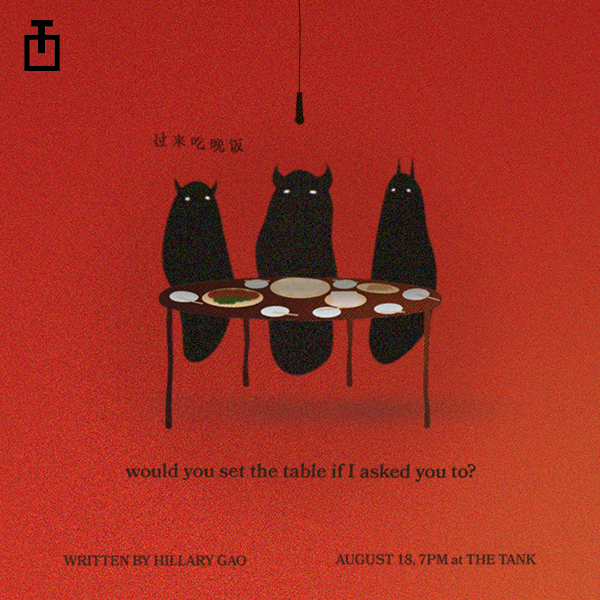

My creative practice involves unlearning (on stage)
what my parents & I once thought was necessary to survive.
I try to create works that revolve around trauma, guilt, pain, and most importantly: confusion.
Questions are meant to be raised, but not necessarily answered; Emotions are to be evoked, but not resolved; and ultimately, everything is done to create an environment--a liveable, breathable space-- that the piece finds refuge in.
I try to create works that revolve around trauma, guilt, pain, and most importantly: confusion.
Questions are meant to be raised, but not necessarily answered; Emotions are to be evoked, but not resolved; and ultimately, everything is done to create an environment--a liveable, breathable space-- that the piece finds refuge in.
As a playwright/director, I begin with a lengthy and varied research and construction process
-- reading, woodworking, thinking about pottery, zodiac animals, and ultimately
rehearsing for hours at a time with the intention to just explore movement and physicalities.
I am interested in following non-linear timelines, deconstructing and decolonizing the English language, and playing with the idea of theatre being all-immersive--an escape, but not necessarily a vacation. Ultimately, I create not only as an attempt to reckon with the manifestation of pain, the strangeness of being identifiably different, and the absurdness of navigating the world, but also to ask my audience to explore these with me.
I am interested in following non-linear timelines, deconstructing and decolonizing the English language, and playing with the idea of theatre being all-immersive--an escape, but not necessarily a vacation. Ultimately, I create not only as an attempt to reckon with the manifestation of pain, the strangeness of being identifiably different, and the absurdness of navigating the world, but also to ask my audience to explore these with me.
Current Works:
 harvesting: curation
harvesting: curation
 "a lamb with spot and blemish": performance
"a lamb with spot and blemish": performance

"would you set the table if I asked you to?": performance
harvesting: curation
"a lamb with spot and blemish": performance